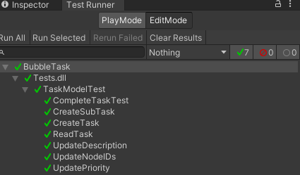
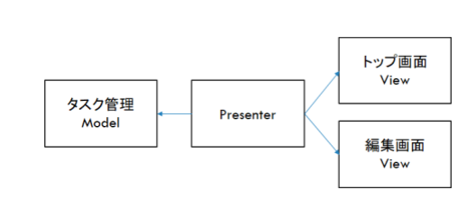
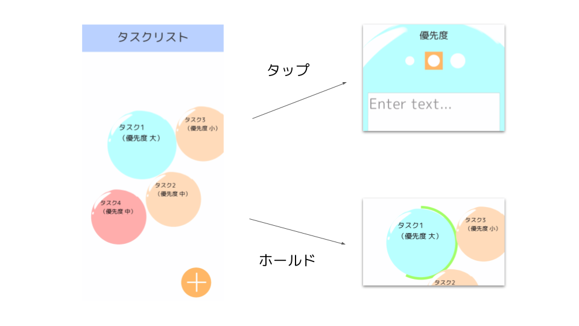
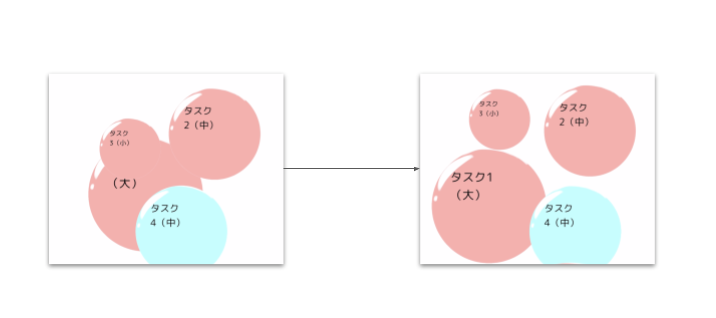

バブルタスク

1. 作品概要
タスク一つひとつを泡に見立て、破裂させることで消化するインタラクティブなタスク管理アプリを実装しました。
泡を長押しするとゲージが進行し、一周すると泡が破裂します。
2. 成果
- デプロイ先（スマートフォン向け PWA 版）
- リポジトリ（フルアセット）
- 動画
3. 操作説明
トップ画面とタスク編集画面の二つの画面があります。
トップ画面では、タスクの消化および、追加・編集遷移を行うことができます。
泡には二つのアクションがあり、長押しは消化、短押しは編集画面に遷移します。
画面右下の+ボタンで新規追加画面に遷移します。
タスク編集画面では、タスクの内容・優先度の編集、追加・削除処理、権利表記を確認することができます。
タスクの優先度は三段階で設定でき、ボタンで変更できます。優先度に応じて、生成される泡の大きさが変化します。
タスクの追加を止めるときは、削除ボタンを押すことでトップ画面に戻ることができます。
4. 開発背景
一般によく用いられるタスク管理アプリは一覧性を重視したリスト形式のものが多いです。
しかし、一日で完結するような短期的なタスクを管理する場面において、リスト形式では逐一並べ替えるコストが発生し、並列するタスクの優先度の表現が難しいと考えました。
そこで、優先度が視覚的に表現され、消化を視覚的に楽しめるようなタスク管理アプリを制作しました。
個人的な目標として、ライブラリを用いた設計の習得を設定しました。ゲーム開発の場でよく用いられる UniRx を導入し、実際に使ってみることで習得することを目指しました。
5. 開発期間
2021 年 11 月〜2022 年 2 月（4 ヶ月程度）
6. 開発環境
- Unity 2020.3.18f1（iOS）
- Unity 2022.1.0b15 ?(PWA 機能利用のため、バージョンアップを実施)
6.1. 使用ライブラリ
- UniRx
- Json.net for Unity
- TestRunner
- etc.
7. ポイント
モデルとビューの分離設計 タスクの管理を行うモデル部分は単体テストを行い、それだけで動作することを確認しました。

また、ビューとの依存は極力さけ、繋がりを担うプレゼンターからのアクセスのみとしました。

タップとホールドの区別 泡には、編集するために選択するときのタップと、消化するときのホールドの 2 つのアクションが割り当てられています。そのとき、単にボタンコンポーネントを使用するだけだと、タップの判定しかできないため、ホールド時間によって適切にイベントを発火するように実装を行いました。

泡の挙動の実装
泡は動くことを想定しているため、接触したときに、お互いが接触面積を減らすように反対のベクトルを加えて移動するよう実装を行いました。
また、画面に対して設置した当たり判定がサイズに応じてスケールしてくれることを利用し、泡と同様の仕組みで画面内に移動するように実装しました。

8. 展望
- アプリの細かな部分にはアニメーションが実装されておらず、非常に簡素な体験となってしまっているので、今後その部分に手を入れていきたいと考えております。
- また、データはアプリ・PWA 版ともに端末に保存されており、複数環境で利用する際にデータの同期ができない状態となっております。
思想として短期的なタスクを登録するものではありますが、個人的に使ってみてさまざまな端末から確認できるというのは利点になると考え、今後対応を検討していく予定です。